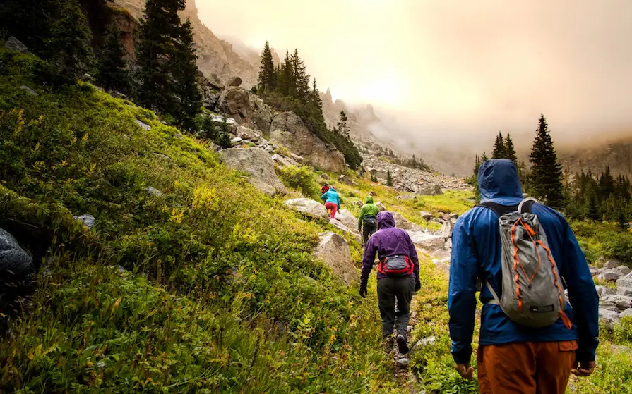
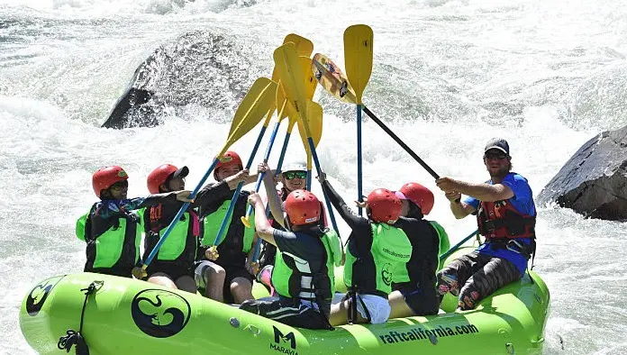
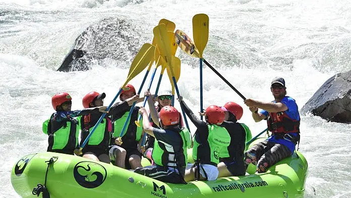

Splash White Water Rafting Home Page
About us
Splash White Water Rafting provides outdoor activities and adventure breaks in Scotland, Morocco & Spain. Established since 1994, we take our happy customers on exciting adventures white water rafting, canyoning, kayaking, paintball, quad biking, mountain biking, bungee jumping and much more. With luxury riads in Marrakech and a stunning new Finca (country house) in the foothills of the Sierra Bernia in Alicante, Spain, Splash guarantee the ultimate activity trip of a lifetime!
Insight
We run a wide range of Corporate Events and Teambuilding Days and break each year from small teams up to large groups of several hundred. We also host Charity Fundraising Events each year helping a wide range of charities raise significant funds.Through our diverse range of activities, we’ve supported numerous charities in raising substantial funds, offering thrilling adventures for a noble cause.Each year we run a special charity event for the charity BLESMA. These guys and girls have all served their country. Many have lost arms and legs in doing so. We try and make sure they have a good time, every time.Over the last twenty years, we have worked with dozens of charities and their fundraisers. By far the most popular activity is white water rafting.
.webp) 
